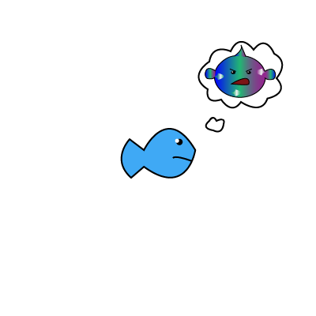

The Little Blue Fish realized that, being friends with the Rainbow Fish might not be so good after all. Just because he had beautiful scales, didn’t mean he had a beautiful heart.
The Rainbow Fish was away for a while, giving the Little Blue Fish time to think, “The Rainbow Fish doesn’t have any friends even though he has so many shiny scales. He must be lonely.” The Little Blue Fish thought the Rainbow Fish deserved a second chance to be kind.
